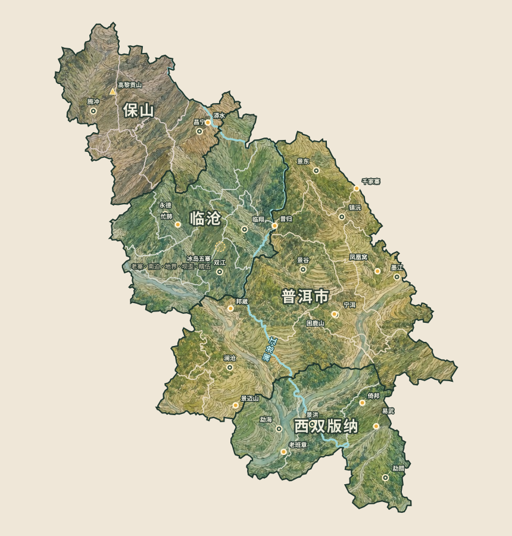
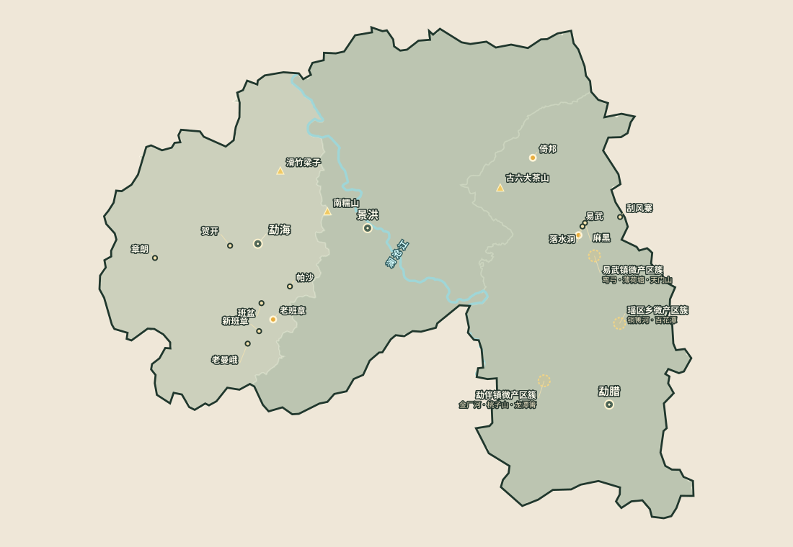
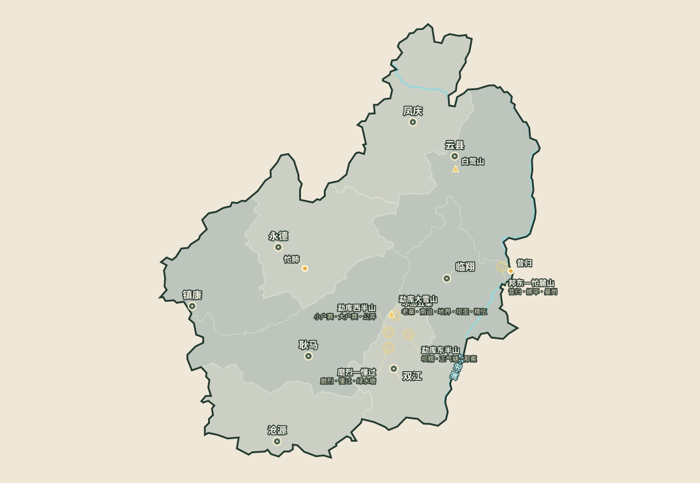
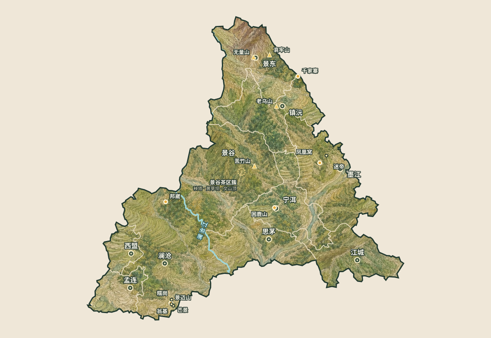
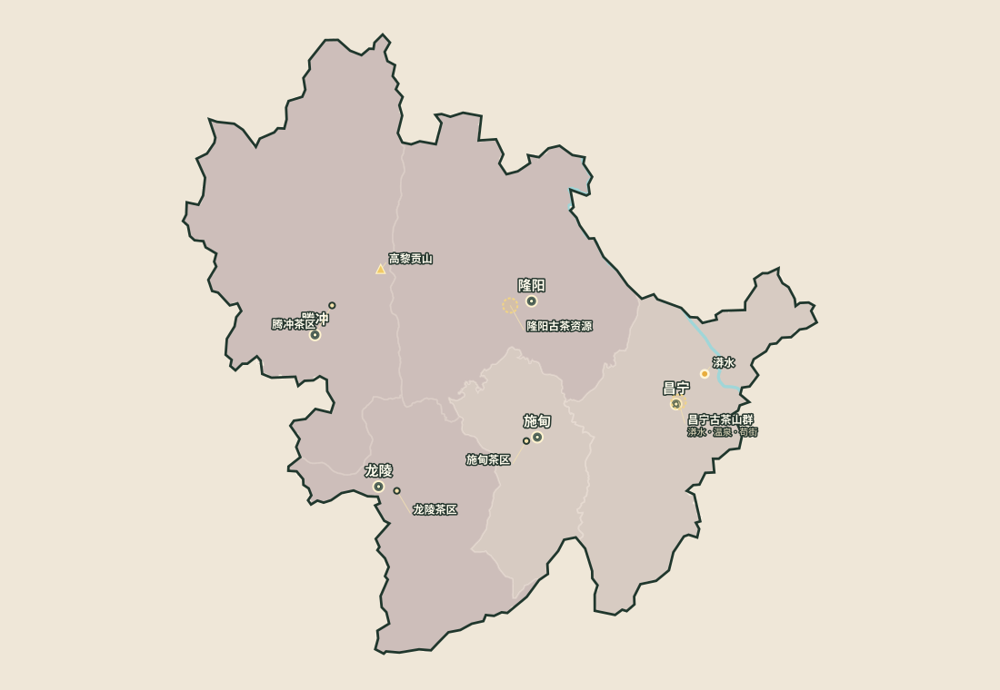

勐腊柔甜，勐海浓强。
先用云南定位图确认西南茶带，再把西双版纳、临沧、普洱市与保山逐级拆到县域、山系、乡镇、村寨和微产区。

勐腊柔甜，勐海浓强。
高香鲜甜，常伴明显涩感。
森林感与县域差异突出，整体更内敛。
传统原料区，风格朴实，山头品牌较弱。
从大区往右，范围越来越小。同一个茶名只写到“易武”或写到“百花潭”，原料边界和风味含义并不相同。
县域是骨架，山系和乡镇是路径，最右端才是日常在商品名上见到的村寨与微产区。
先记大区性格，再进入县域、山系与村寨
山头体系最成熟，版纳内部差异最大
高香、鲜爽、甜感与涩感并存
县域分散，整体比版纳更内敛，森林与山系差异突出
传统第四产区，现代山头市场较弱
典型：滋味直接、苦涩较清楚、汤质朴实；红茶和多茶类属性突出。

柔、甜、花蜜、喉韵；同一镇内仍有村寨与森林茶园之分。
河谷深、进入成本高，市场常归入“易武”，行政上并不属于易武镇。
市场边界继续细分，商品名逐步从河谷走向更小地块。
细香、清甜、轻巧而有韵。
从浓强苦底到香甜平衡，是版纳最完整的结构坐标。
花香、甜感与适度苦涩；景洪小勐宋不要与勐海勐宋混淆。
两套边界：天门山属于易武镇曼乃村委会马叭寨一带；同庆河／铜箐河、百花潭属于瑶区乡；金厂河属于勐伴镇。市场通常把后三者也纳入广义易武。

清甜、清凉、鲜爽、生津快；老寨只是冰岛行政村中的一个核心坐标。
西半山偏甜厚，东半山偏高香；整体常见花蜜、鲜甜与清楚涩感。
高香、冲击力、矿物与岩韵，山地和澜沧江谷共同塑造风格。
香甜厚实，苦涩较清楚，常比勐库显得粗犷。
需要回到具体村寨和茶种判断。

兰花、蜜香、森林草木与甜润。
细、雅、香甜协调。
山野、木质、矿物，甜涩并存。
清香、清甜、结构克制，山系内部差异很大。
甜香、清柔或细腻回甘；景谷大白茶体系与墨江小微产区并存。
更适合按村寨、庄园与企业基地学习。

直接、朴实、苦涩清楚，生普与红茶并行。
高海拔、立体气候与边缘山地资源。
市场山头声量较弱，更适合按具体产品和生产者判断。
先找到最明显的味觉方向，再回到相邻产区横向比较，比孤立背诵山头名称更容易形成坐标。
易武、景迈、困鹿山
比较花蜜、兰香、汤感细度与喉韵。
布朗山、老班章、老曼峨
比较苦感强度、厚度与回甘速度。
冰岛五寨、勐库东西半山
比较鲜爽、清凉感、甜度与涩感位置。
昔归、邦东
比较香气冲击、矿物感和江谷茶的力度。
千家寨、镇沅、无量山
比较草木、木质、矿物与甜涩平衡。
昌宁、保山传统原料区
比较香气直接度、苦涩清晰度与耐泡性。